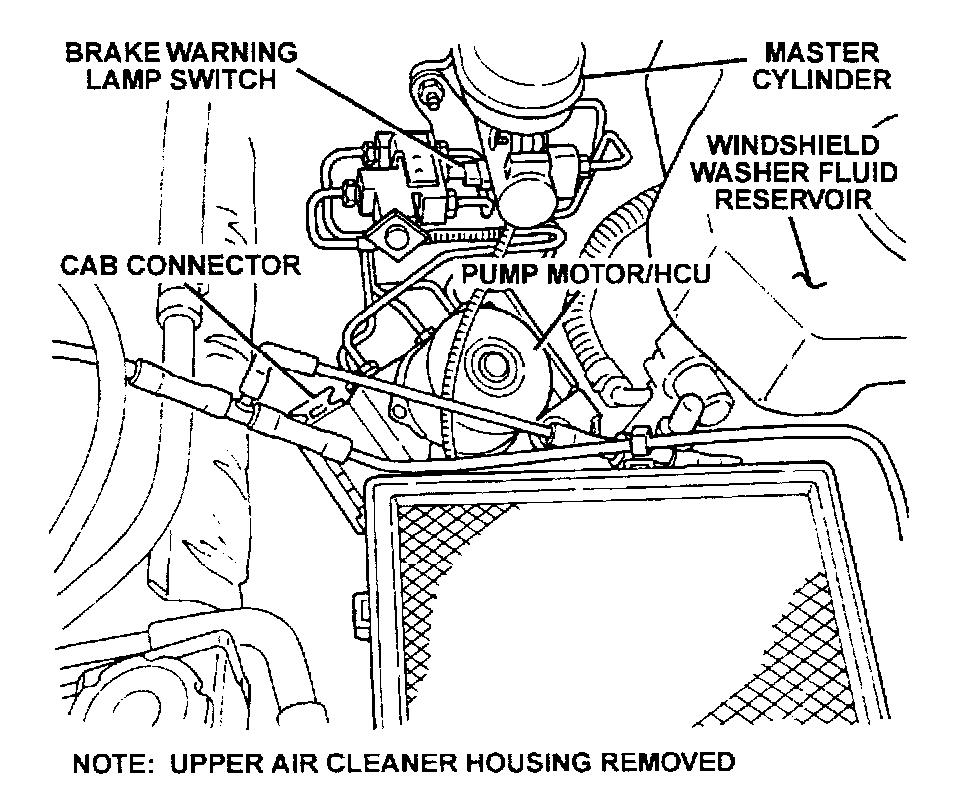

Operation CHARM
: Car repair manuals for everyone.
Русский
Home
>>
Jeep
>>
1997
>>
Grand Cherokee 4WD L6-4.0L VIN S
>>
Repair and Diagnosis
>>
Brakes and Traction Control
>>
Antilock Brakes / Traction Control Systems
>>
Hydraulic Control Assembly - Antilock Brakes
>>
Locations
Hydraulic Control Assembly - Antilock Brakes: Locations
Hydraulic Control Unit (HCU):

The HCU is located below the master cylinder/brake booster assembly.